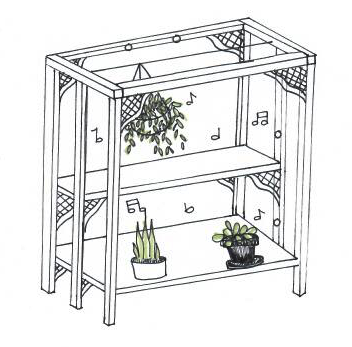

Vision
Studies show that plants react well to music, and enjoy listening while growing. My idea is to build a plant stand with brackets created either with a 3D printer or a CNC machine and run small speakers in to transmit bluetooth audio via a raspberry pi.Plans
I will build a two tier shelf for a few plants with a rod to hang some baskets. It will have fabricated brackets with an aesthetically pleasing honeycomb pattern. I will wire some speakers through so that I can play my plants' favorite album, "Plantasia."
Some Concerns
I'm a little worried about trying to make the raspberry pi work, as I am somewhat new to coding. Affixing the speakers to the raspberry pi might also be difficult, but I might just use an audio jack if I get frustrated.
The Final Product
I am excited to have more space and music for my plants.
